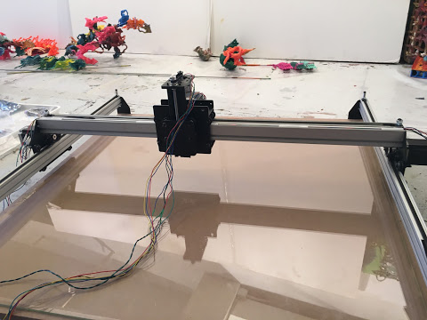

Currently the Paintants Art Studio has 4 3D Printers. A Wanhao Duplicator 4S, 2 Dremel printers, and 1 ID3 Glacier Summit. Since they make a lot of large scale flat pieces of art. They were in desperate need of a large scale 3D Printer. The Paintor X was my main project over this past summer.
The Design Stage
It is better to measure twice and cut once- Mr.Liva
Working with Fabian was a very different experience from my usual work environment. I was so used to testing things 10 times in software, before I moved on to any hardware. In the art world, the engineering is almost opposite. I had designed a large CNC type machine in CAD, and instead of checking for all of the constraints we ordered the parts immediately. There were a lot of other things that we needed to consider that we ended up doing while the printer's build was in progress. We decidede to use a large sheet of borosillicate glass with an e3D V6 hotend and a Titan extruder. These components would allow us to print at the speed and reliability that we needed.
The reason we went with a flat CNC type machine with very litle build height, was to eliminate cost for a feature that we did not need. Printers that are 1M in every direction would require an absurd ammount of parts and power. With a flat shape build height of only 8cm we could use much cheaper and lower cost hardware, while maintaining a level of precision we would have otherwise lost. Additionally, the art studio did not need a machine that could print huge cube shaped objects. The purpose of this machine would be to primarily print the background and medium for which other 3D prints and silicon would be attached to.
Building
The physical build process of making a 3D printer is always my favorite part. You get to learn the machine inside out, and when you are finished you can truly say that no one else knows the machine as well as you do. For me tackling the Paintor X was also outside of my comfort zone. I had only built printers at the smaller desktop scale before, and while I was confident in my skills, I didn't know what kind of problems I would run into when building it. For the first few days I spent most of my time taking inventory and building the basic frame of the machine. I didn't run into any issues until I hit the electronics portion of the build.
The main control board we used was the RAMBo 4X. This board was unfamiliar to me, and wiring for it was a little tricky because the motor wires had not come labeled either. It took a lot of research, soldering, and luck to finally figure out the exact color code for our motors. The next problem we ran into was that the motors could not sustain movement for too long due to the standard wires we were using. The wires had to be routed around the machine and thus were roughly 2m in length. For this long of a wire we needed to use a thicker gauge wire for all of the motors, otherwise our wires would start overheating.
The next step was to modify the controller's firmware to work with the machine I had built. I modified the open source Marlin firmware to work with the Paintor X. You can find my source code here